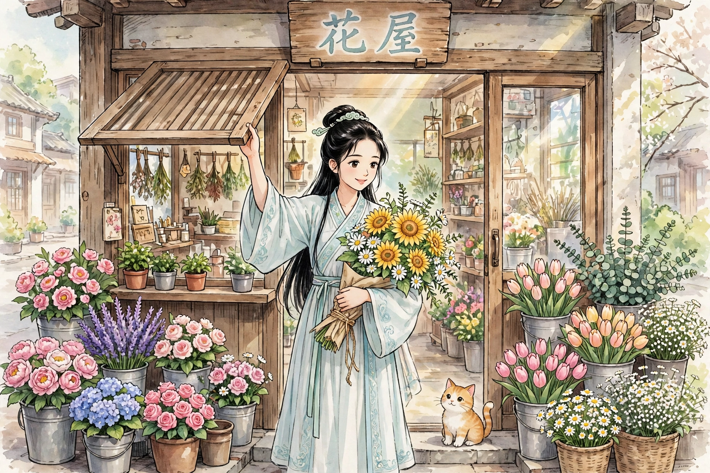

回首页
第 6 期
2026-11-19 · 漫画小故事·花店第二页

清晨开店
晨光里推开木窗，抱一捧向日葵开门，猫在门口等第一位客人。
雨中送花
雨下起来了，撑一把油纸伞，把粉玫瑰送到老奶奶手里。
黄昏打烊
灯笼一盏盏亮起来，抱着薰衣草回头看一眼花屋，猫已经睡着了。
心 得
花店的第二页画完了。早上开门、雨里送花、晚上打烊，一天就这么过去了，花还香着，猫也睡着了。画的时候想着，日子就是这样一格一格攒出来的。
备 注
三张都是水彩漫画风，脸都对上锚图，浅青汉服三张一致；招牌「花屋」清晰无乱码，店内小牌子上有模糊小字，不算乱码；三张一次过，无重拍。
← 上一期
下一期 →